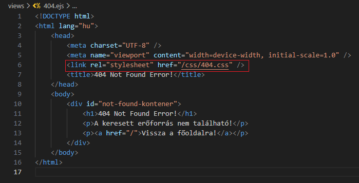
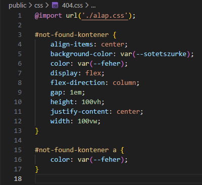

Alap route-olás - 404.ejs és 404.css
Alap route-olás - 404.ejs és 404.css
Ebben a részben a 404 nézettel (view) és a stílusával fogunk foglalkozni.
-
Szerkesszük az
404.ejsés404.cssállományt. és-
<link rel="stylesheet" href="/css/404.css" />- mivel azapp.mjsállományban beállítottuk a hivatkozást apublicmappára, ezért minden elemére ilyen speciálisan tudunk hivatkozni.
-